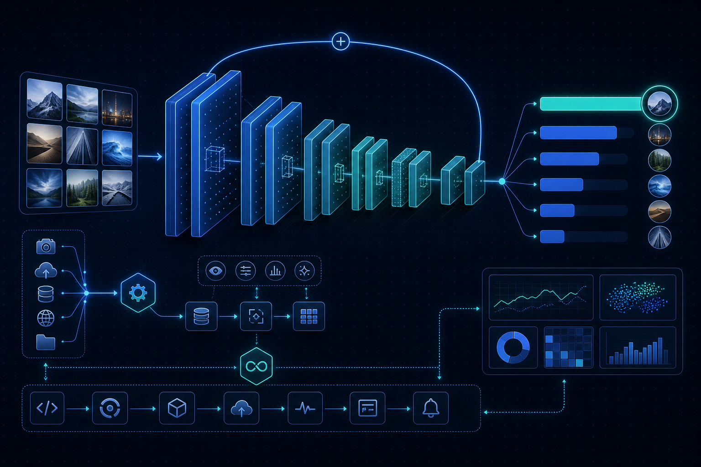

Phan Hung Thinh
I build production ML systems that move business metrics.
From churn prediction and forecasting to recommendation engines and AI agents, I turn messy data into reliable, deployed pipelines that drive real decisions.
Turning data into decisions
"Nothing changes if nothing changes."
With 2+ years across startups and large companies, I focus on shipping data work that actually reaches production. I enjoy collaborating with cross-functional teams and delivering practical, data-driven solutions that support real organizational growth.
What I work with
Academic foundation
A data science degree grounded in statistics, machine learning, and applied projects.
Bachelor of Data Science
 International University - VNU HCMC
International University - VNU HCMC
Built a strong foundation in statistical analysis, machine learning, and data visualization. Completed coursework in data mining, predictive modeling, and business intelligence with hands-on, real-world projects.
Key Coursework & Skills
Featured projects
Production-grade machine learning and data engineering, from prototype to deployed pipeline.
Churn Prevention System + AI Retention Agent
End-to-end retention platform: BG/NBD and survival churn models, ALS/Item2Vec/Two-Tower retrieval, churn-aware NeuMF ranking, plus a LangGraph AI agent that segments customers and sends personalized emails, all orchestrated by Airflow.
GMV Forecasting - Production ML Pipeline
Production ML pipeline with the full lifecycle: data prep, hybrid SARIMAX + Prophet training, API deployment, and monitoring with MLflow, Docker, and Prometheus.
E-commerce Data Pipeline & Analytics Platform
Complete end-to-end data engineering solution with ETL pipelines, dimensional data warehousing, and analytics for an e-commerce platform.

Animal Classification - Production ML Pipeline
Production image classification using CNNs and transfer learning with full MLOps: ResNet-50 training, API deployment, and monitoring with MLflow and Docker.
Work experience
My professional journey across startups and large enterprises.
Data Scientist
 Eplus Research
Eplus Research
Jan 2026 – Current
- Strategic Pharmacy Segmentation: Engineered a data-driven scoring engine utilizing advanced clustering to segment 12,000+ pharmacies, driving a 12% increase in GMV among newly onboarded partners.
- Vaccine Recommendation Engine: Built a personalized next-dose recommendation engine for VNVC voucher holders, driving a 5% increase in voucher redemption via model-driven SMS triggers.
- ML Pipelines: Designed and scheduled data pipelines and DAGs using dbt and Airflow to automate feature extraction, reducing data latency and ensuring reliable inputs for production ML models.
- Model Monitoring: Built Power BI dashboards to track model performance, segment drift, and downstream business KPIs for cross-functional stakeholders.
Data Analyst
 Grab
Grab
Nov 2023 – Jan 2026
- ML & Forecasting: Delivered a safety equipment detection model (~92% precision) and a GMV forecasting model (~4% MAPE), with outputs automated into a team-managed delta table.
- Data Engineering: Developed and scheduled data pipelines in Databricks using SQL (Presto/Trino), PySpark, and Python, reducing manual intervention across high-volume workflows.
- Data Quality: Implemented robust quality checks and source validation, improving consistency and reducing manual preprocessing in downstream pipelines.
- BI & Reporting: Designed Power BI dashboards for regional performance reviews, automating reporting processes and reducing manual effort by 70%+.
- Cross-functional: Partnered with Finance, Operations, and Strategy teams to deliver impactful ad-hoc analyses and dashboards.
Data Science Intern
 Unilever
Unilever
Oct – Nov 2023
- Built machine learning models for demand sensing to improve sales forecast accuracy.
- Engineered time series features and evaluated model performance using real-world FMCG data.
Data Science Intern
 FWD Insurance
FWD Insurance
Jun – Aug 2023
- Supported development of ML models to detect potential insurance claim fraud.
- Built Power BI dashboards and conducted EDA on claims data to support underwriting decisions.
Data Analyst Intern
 Logivan
Logivan
Jun – Dec 2022
- Built dashboards in Holistics (BI Platform) for shipment tracking and partner performance.
- Analyzed logistics data to improve route efficiency and reduce delivery delays.
Certificates
Professional certifications and continuous learning.


Let's build something with data
Open to data science roles and collaborations. Reach out anytime.
Location
Ho Chi Minh City, Vietnam
Phone
Resume
Ready to collaborate on your next data science project?
Send a Message